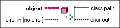
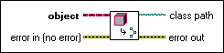

Get LV Class Path VI
Owning Palette: Cluster, Class, & Variant VIs and Functions
Requires: Base Development System
Returns the path to the class of the object.
 Add to the block diagram Add to the block diagram |
 Find on the palette Find on the palette |
Owning Palette: Cluster, Class, & Variant VIs and Functions
Requires: Base Development System
Returns the path to the class of the object.
| Add to the block diagram |
Find on the palette |
 |
object specifies the object for which you want to retrieve the path to the owning class. |
 |
error in describes error conditions that occur before this node runs. This input provides standard error in functionality. |
 |
class path specifies the absolute path to the .lvclass file on disk. If an error occurs, the value of class path is <Not A Path>. If object is a LabVIEW Object, which does not exist on disk, the value of class path is <Empty Path>. If object belongs to a class that is not saved, class path is a relative path consisting only of the name of the class. |
 |
error out contains error information. This output provides standard error out functionality. |